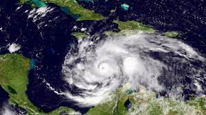

Hurricanes & Tropical Storms in Jamaica
The earliest records of Jamaican hurricanes were derived from British observations during the colonial era, including those curated by British meteorologist William Reid and historians Bryan Edwards and Edward Long. In 2003, weather historian Michael Chenoweth reconstructed Jamaica's 18th-century climate using daily records kept by slaveowner Thomas Thistlewood, identifying 12 tropical cyclones with gale-force winds from 1750–1786. Formal monitoring began in 1880 with the Jamaican Weather Service.
Historical Hurricane Data
| Year | Date | Name | Category | Key Impacts | Fatalities | Damages (USD) |
|---|---|---|---|---|---|---|
| 1903 | Aug 11 | Unnamed | Cat 3 | Landfall with 120 mph winds; heavy damage. | 65–90 | $10 million (1903) |
| 1904 | Jun 13 | Unnamed | Cat 1 | Slow-moving; >10" rainfall. | – | – |
| 1912 | Nov 10–18 | Unnamed | Cat 3 | Peak intensity strike; extensive damage. | 100 | $1.5 million (1912) |
| 1944 | Aug 20 | Unnamed | Cat 3 | Crossed Jamaica; 90% banana trees lost. | 30 | Millions |
| 1951 | Aug 17–18 | Charlie | Cat 3 | Deadliest 20th-century disaster; 17" rain, 125 mph gusts. | 152 | $50 million (1951) |
| 1988 | Sep 12 | Gilbert | Cat 3 | Strongest landfall; 19' surge, 34" rain. | 45 | $700 million (1988) |
| 2004 | Sep 8 | Ivan | Cat 4 | Near-direct hit; severe flooding. | 17 | $575 million (2004) |
| 2024 | Jul 3 | Beryl | Cat 4 | Passed south; 4 deaths. | 4 | $204 million (2024) |
| 2024 | Nov 5 | Rafael | TS | Flooding in southern parishes. | 2 | $8 million |